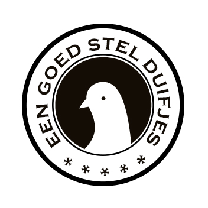

Werk de stappen van boven naar beneden af. Een groen vinkje betekent: klaar. Een stap die nog niet aan de beurt is, staat grijs.
Maakt een volledige kopie van de Google Sheet (alle uitslagen, duiven en teams) in je Google Drive, met de naam Duivencompetitie … - ARCHIEF. Aan de huidige gegevens verandert niets.
Plak de lange ringnummers — één per regel (of gescheiden door spaties/komma's). De korte code (laatste 3 cijfers) maak ik er zelf van. Later nog een duif erbij of eraf? Pas de lijst aan en sla opnieuw op: duiven die al een team hebben, houden hun naam en team.
De teams van vorig jaar staan klaar. Vinkje uit = doet niet meer mee. Een naam aanpassen mag (een naamswijziging gaat ook mee naar de duiven van dat team). Onderaan voeg je nieuwe teams toe.
Het maximum dat elk team op het keuzemoment mag kiezen (eerder stoppen mag).
Elk team krijgt een eigen link en kiest daar zijn duiven (zelf of willekeurig) en geeft ze een naam.
Maakt alle duiven weer teamloos en naamloos (zelfde ringnummers). Teams en uitslagen blijven staan.